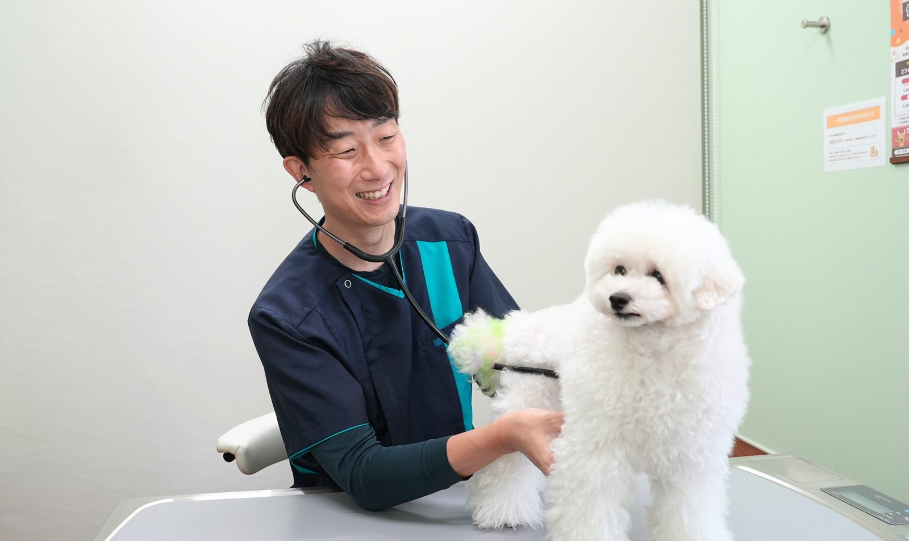
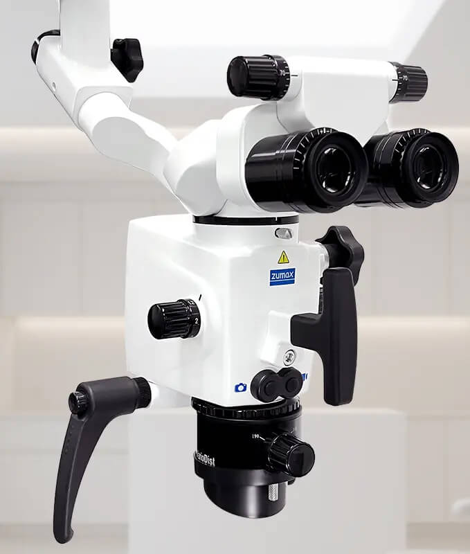
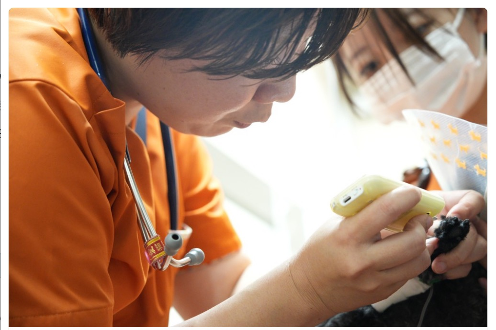
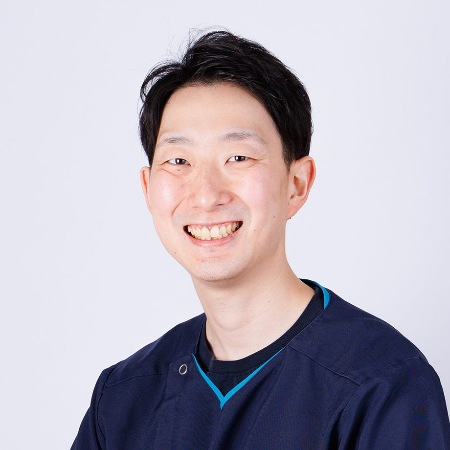
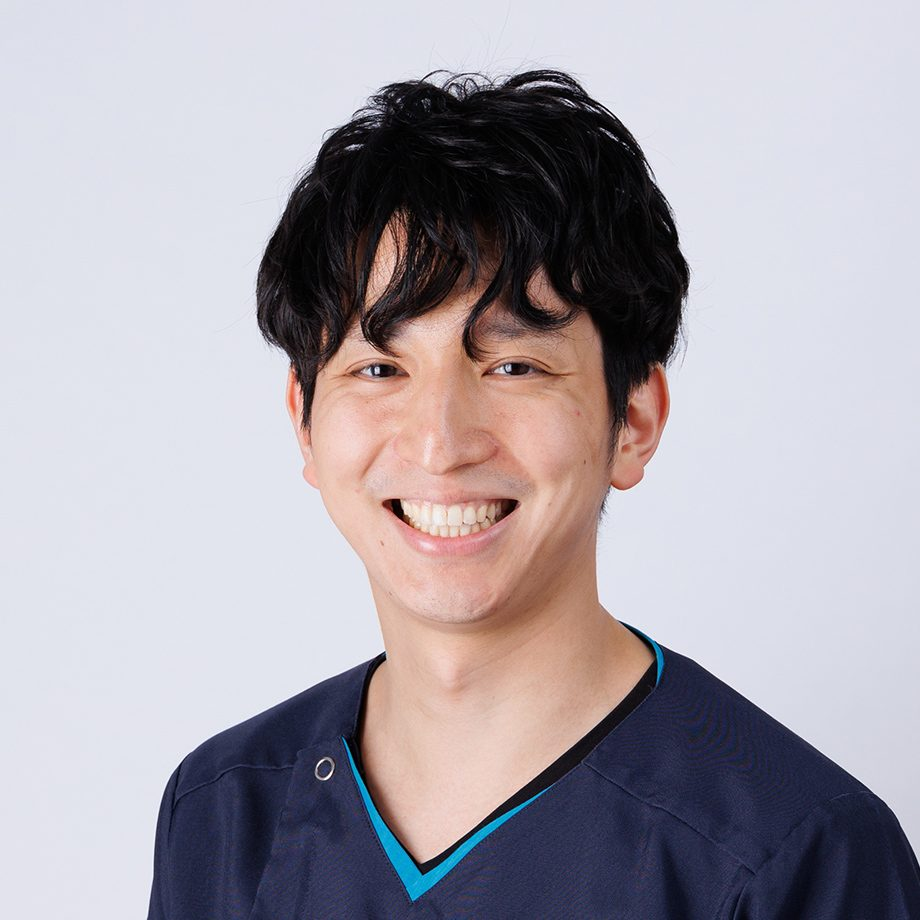
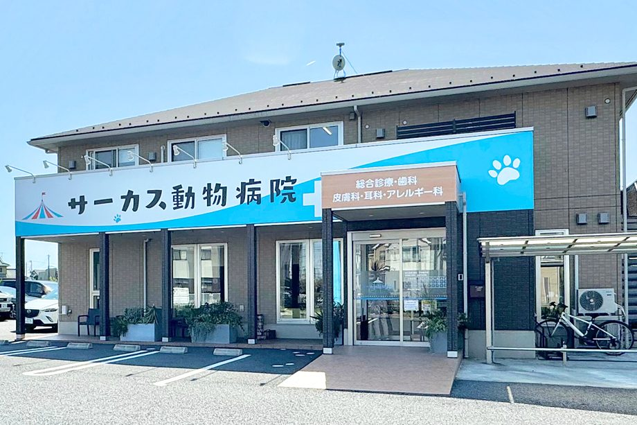
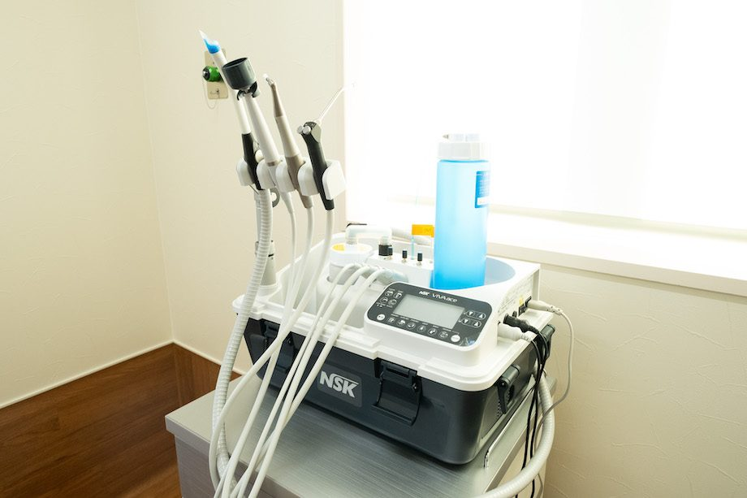
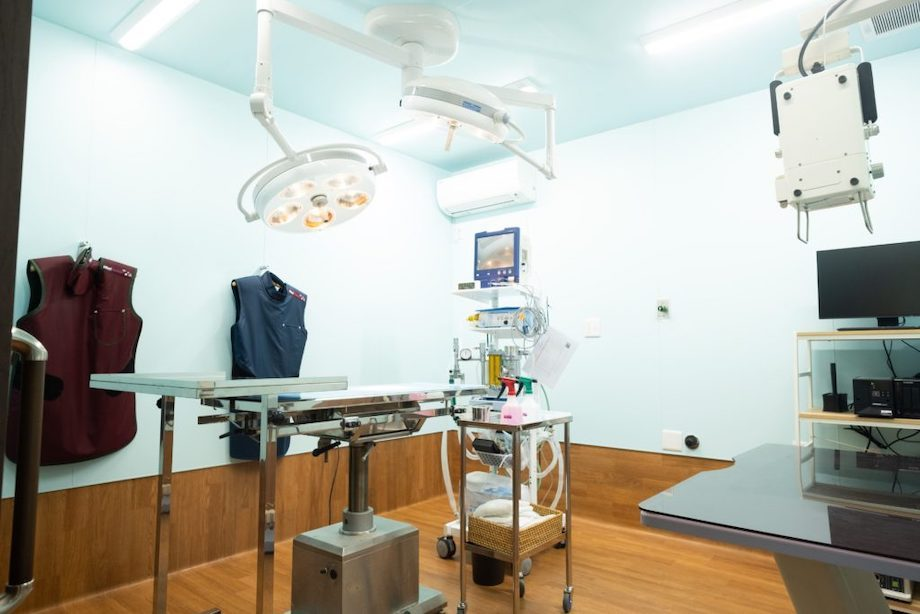
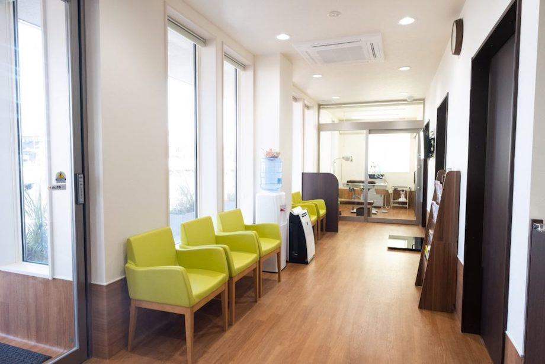
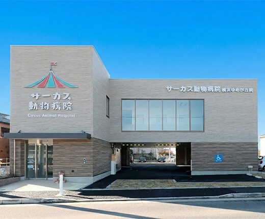

01 / CASE VOLUME
手を動かす機会が、毎週ある。
重度歯周病の抜歯から保存治療まで、歯科の症例が日々集まる環境。経験を“いつか”にしません。
犬・猫の歯科に、もっと深く向き合いたい獣医師へ。そして、「歯科が好き」を自分の強みにしたい動物看護師へ。診療と動物看護、それぞれの立場から、歯科チームの一員になりませんか。
見学の交通費・宿泊費は支給します。遠方の方もどうぞ。
正式応募は、見学してから決められます。給与・勤務時間・勤務曜日もご相談ください。

神奈川県藤沢市 ｜ DENTAL TEAM集計期間：2025年10月6日〜2026年10月5日の直近12ヶ月。藤沢菖蒲沢院・横浜ゆめが丘院の合計。麻酔下の歯科処置は1回の来院（会計）を1件として集計しています。週約10件は年間518件から算出した平均です。
ただ症例数が多いだけではありません。診断から術後までに向き合い、ひとつの手技を繰り返し積み上げられる。だからこそ、歯科医療を自分の強みにできます。
重度歯周病の抜歯から保存治療まで、歯科の症例が日々集まる環境。経験を“いつか”にしません。
歯科レントゲン、根管治療、顕微鏡下の歯周再生、補綴まで。治療の幅を、現場で広げられます。
獣医師は歯科専任・総合診療との兼任・業務委託。動物看護師は歯科と総合科に関わりながら、自分の強みを育てていく働き方です。

藤沢菖蒲沢院では、歯科用顕微鏡を用いた歯周外科を行っています。拡大視野で患部を観察し、組織の除去から縫合まで、繊細な操作に向き合える環境です。
肉眼では捉えにくい細部を、拡大した視野で確認します。
歯周組織を見極めながら、精密な操作と縫合に取り組みます。
症例に応じたフラップ手術や骨補填材の応用など、歯周外科の選択肢に触れられます。
麻酔下の歯科処置は、直近12ヶ月で518件、週平均で約10件。術中の画像検査から抜歯、歯を残す治療まで、チームが向き合ってきた処置を来院単位でご紹介します。
集計期間：2025年10月6日〜2026年10月5日の直近12ヶ月。藤沢菖蒲沢院・横浜ゆめが丘院の合計。各処置を行った来院（会計）を1件として集計しており、会計明細の行数や歯の本数ではありません。同じ来院で複数の処置を行うため、各項目の件数は重複し、合計は518件と一致しません。
※ 猫の麻酔下抜歯は、「猫歯肉炎抜歯」または「歯周病抜歯」の会計項目を含む猫の麻酔下来院を、1回につき1件として集計。麻酔下スケーリングは旧オーダー「歯石除去（A）（B）（C）」やキャンペーン用オーダーを含み、無麻酔歯石除去は除外しています。
※ 麻酔下スケーリングは、2025年の会計項目名が異なるため、実数が上記より多い可能性があります。
歯科を中心にキャリアをつくることも、総合診療の手応えを保つことも。今の生活や目指す専門性に合わせて、無理のない形を相談できます。
勤務曜日・日数は、ご希望を伺って相談します。 日曜に勤務できる方は歓迎していますが、ほかの曜日もご相談いただけます。
歯科診療と手術に集中。外来・処置・手術のすべてを歯科として担当します。
歯科をキャリアの軸にしたい方へ
総合診療の幅を保ちながら、歯科の専門性を深める働き方。診療の配分・曜日はご相談ください。
総合診療の経験も活かしたい方へ
他院や研究と両立しながら、歯科の診療に取り組む働き方。ご希望の勤務曜日・日数をご相談ください。
業務委託で活躍している獣医師が、すでに在籍しています
見学・オンライン相談は、正式応募を決める前で大丈夫です。
歯科に興味がある。もっと理解を深めて、得意な分野にしていきたい。そんな動物看護師の方を募集しています。歯科を主に担当する動物看護師も在籍するチームで、獣医師と連携しながら経験を重ねていきませんか。
STAFF VOICE ／ 動物看護師・岩垂のインタビューより

「一人のプロとして認めてくれるのが嬉しいですね。」
岩垂 ／ 動物看護師
栄養学を勉強していると伝えたところ、「社内でセミナーをやってほしい！」と声をかけてもらったという岩垂さん。学んでいることに関心を持ち、チームに共有する機会をつくろうとしてくれる。その経験を、サーカスで働く嬉しさの一つとして語っています。
岩垂さんが表現するサーカスは、「出る杭をなでなでしながら伸ばしてくれる職場」。一緒に頑張りたいと思える先生やスタッフに出会い、自分への自信も高まったと話しています。
あなたが学んでいること、これから得意にしたいことも、ぜひ聞かせてください。歯科が好きという気持ちと、総合科も含めた動物看護の経験を、ここでどう活かせるか一緒にお話ししましょう。
完全な歯科専任ではありません。 歯科診療を支える動物看護に加え、総合科の動物看護業務にも関わっていただきます。幅広い臨床経験を大切にしながら、歯科を得意分野として育てていく募集です。
今の経験や、これから学びたいことを聞かせてください。歯科と総合科への関わり方、仕事内容、応募条件について、見学・オンライン相談で具体的にお話しします。
動物看護師の見学・相談を申し込む症例ごとの治療計画から、実際の手術、日々の動物看護まで。獣医師と動物看護師が連携する歯科チームです。

総合診療から歯科の専門性を深め、2019年に院長へ。ご家族との対話を大切に、一頭ごとの状況に合った歯科診療に取り組んでいます。
詳しくは 公式プロフィール ／ 歯科担当医の資格・所属

歯科診療の現場責任者。症例ごとに一緒に治療計画を立て、手術に入ります。歯科・眼科・皮膚科を担当。

業務委託の歯科スタッフとして、チームに参加しています。動物の回復力を引き出すこと、ご家族に寄り添うことを大切にする獣医師です。
業務委託で活躍している獣医師も在籍しています。 正社員だけではない関わり方が、すでにあるチームです。ご希望の勤務日数や、ほかの仕事との両立についてもご相談ください。
診療への向き合い方、専門性の育て方、これからつくりたい獣医療のこと。入職前に、ぜひ本人の言葉にも触れてみてください。

歯科を強みに、技術を磨きながら仲間を鼓舞する。平塚院長のキャリアと想いを紹介します。
平塚先生のインタビューを読む
歯科・皮膚科・眼科を軸に、自分の得意を選び取る。今井先生が語る、新しい獣医師キャリアのあり方です。
今井先生のインタビューを読む人間関係の良さも、獣医療に集中するための大切な土台です。スタッフ同士が気軽に相談し合い、一人ひとりが長く安心して働ける環境づくりを大切にしています。





受付は専任スタッフ、清掃はシルバー人材へ。獣医師が電話番や掃除を兼任しない体制です。休憩が削れた分は勤務時間として扱い、残業と休憩を週単位で調整しています。
歯科獣医師・歯科動物看護師を募集しています。給与・勤務時間は応相談。職種ごとの仕事内容や条件は、経験・スキルとご希望を伺いながら相談します。
※ 条件は変更される場合があります。エントリー時に最新の詳細をご確認ください。
手術室の空気、症例への向き合い方、チームの会話。求人票だけでは伝わりにくい部分を、まずご自身の目で確かめてください。
Day 0〜2は選考の段階を表します。各日程は、ご都合に合わせて個別に調整します。
はい。カジュアルな見学を歓迎しています。まずは現場を見て、歯科チームの雰囲気や働き方をご確認ください。
はい。見学時の交通費・宿泊費を支給します。当日の昼食もご用意しますので、遠方からの見学もぜひお申し込みください。
オンラインで30分お話しすることも可能です。見学前に、仕事内容やご希望の働き方についてご相談いただけます。
はい。獣医師は歯科専任のほか、総合診療との兼任も相談できます。動物看護師は完全な歯科専任ではなく、総合科にも関わっていただく働き方です。
獣医師・動物看護師のどちらも歓迎します。「どんな人と働くのか」「今の経験をどう活かせるか」。気になることから話しましょう。正式に応募するかは、そのあとで決められます。
見学は公式のカジュアル面談フォームから、仕事内容や働き方のご相談はLINEから受け付けています。見学フォームでは希望職種を選択し、歯科チームへのご関心は担当者からのご連絡時にお伝えください。
採用担当：佐々木